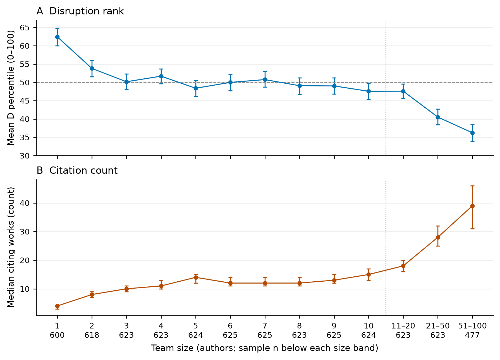
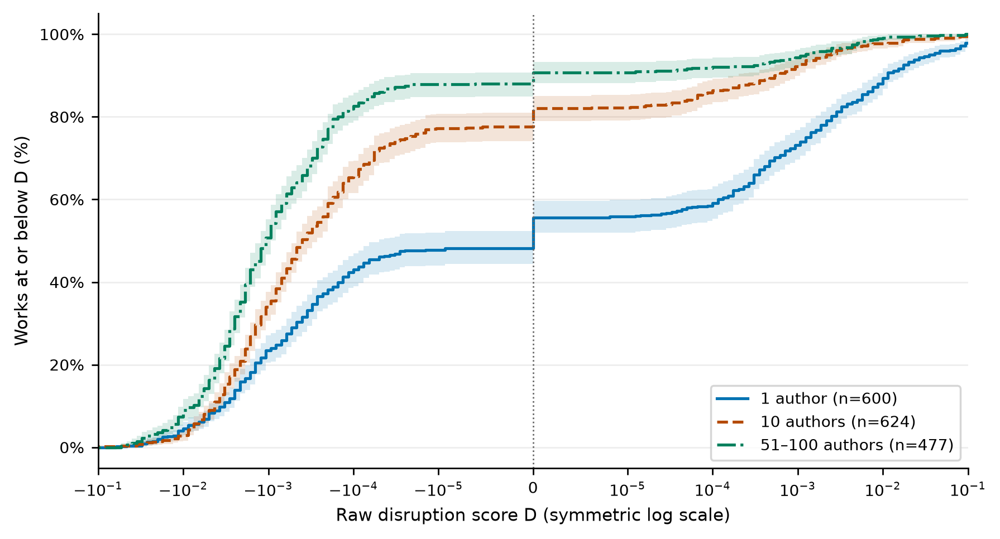
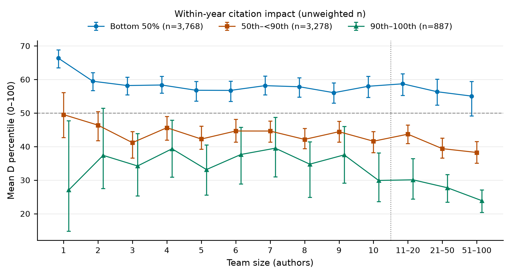
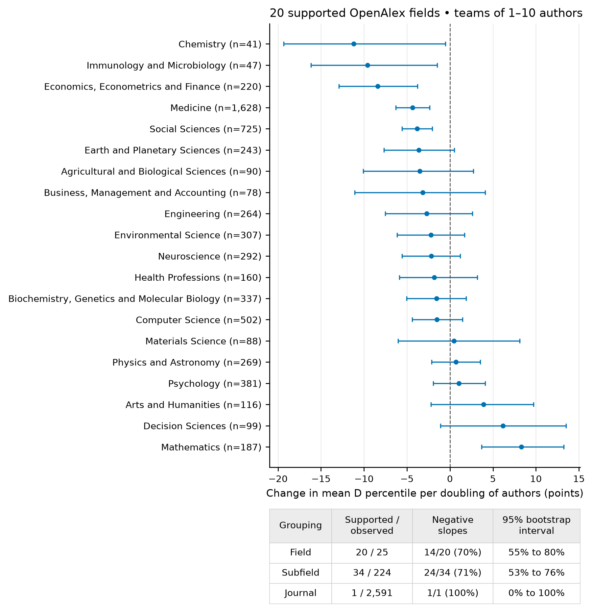
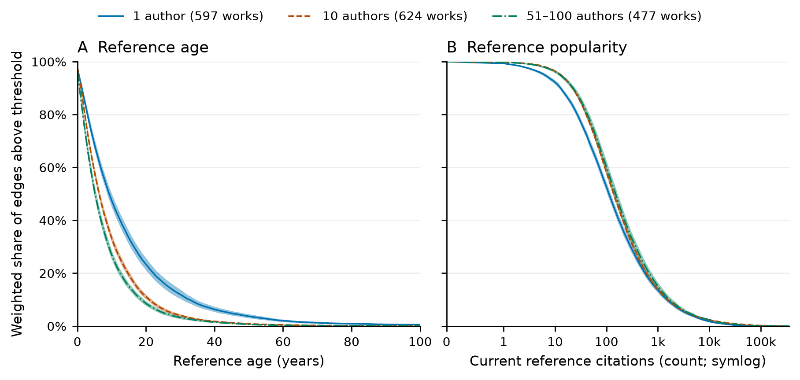

In the eligible Columbia sample, larger teams generally had more citing works and were more likely to have negative disruption scores. Among 7,933 OpenAlex works published in 2021–2024 with at least one strictly later citing work by the cutoff, each doubling of team size among works with 1–10 authors was associated with a 3.48-point lower within-year disruption percentile (95% interval −4.27 to −2.70; n=6,210). The median citing-work count rose from 4 [3, 4] for solo works to 15 [13, 17] for ten-author works and 39 [31, 46] for the 51–100 band (n=600, 624 and 477). Neither trend was strictly monotone [T1, T82, T87, F11, P15].
A negative score means more later works cited the focal work together with a recorded reference than cited the focal work alone [brief] [T32, T33]. Negative scores accounted for 48.2% of solo work [44.3%, 52.3%], versus 77.6% [74.1%, 81.0%] for ten authors and 88.1% [85.0%, 90.8%] for 51–100 authors (same group sizes). Solo work ranked higher without being predominantly positive [T66, F12]. The slope was negative in the bottom half of citation impact; estimates for the middle and top groups were inconclusive, and the data did not establish a stronger decline at the top [T68, F13]. Most supported fields and subfields had negative slopes, but the pattern was not uniform. Larger teams cited newer and more currently cited references [T70, T74, F14, F15].
Stage 2 requires positive focal citation separately in each window and replaces finite-population intervals with inference that resamples even the fully sampled stratum. Keeping works with a defined score but no focal citation gives much the same headline gradient; the tables below show where point estimates or uncertainty differ. These are local, observational associations, not effects of assigning team size or evidence for patents and software [T66, T82, T86, T87, J15] [brief].
Frame and sample. The Columbia OpenAlex snapshot contains 55,371 works from 2021–2024 with 1–100 listed authors. Team size uses the snapshot authorship count, including unresolved byline positions; no additional document-type filter was applied. The screen required at least one distinct, syntactically valid OpenAlex work ID as a recorded reference, excluding the focal work's own ID. It removed 10,720 works with no recorded reference edge and a registered reference count of zero. A further 4,110 works had usable references but no positive snapshot citation total, later-calendar-year count through the snapshot year, or strictly later local inbound edge. The 40,541 remaining works form a proxy frame, not a census of works with positive date-filtered global inbound counts. Among the reference exclusions, 3,507 had positive snapshot totals, 3,188 had positive later-year counts and 482 had dated local inbound evidence; these criteria overlap [T1, T3, T83, F20, J5].
The prespecified draw was stratified simple random sampling without replacement from sorted IDs (PCG64 seed 42), with near-equal allocation across exact sizes 1–10 and pooled 11–20, 21–50 and 51–100 bands, subject to stratum capacity. Each draw retained weight N_h/n_h (the inverse selection probability); weights were not reset after eligibility filtering. The 51–100 band was fully sampled. The exact frame sizes, weights and both windows' counts by stratum and cohort are in the audit [T2, T5, T82, J5].
| Authors | Drawn | Main F>0 | Authors | Drawn | Main F>0 |
|---|---|---|---|---|---|
| 1 | 627 | 600 | 8 | 626 | 623 |
| 2 | 627 | 618 | 9 | 626 | 625 |
| 3 | 627 | 623 | 10 | 626 | 624 |
| 4 | 627 | 623 | 11–20 | 626 | 623 |
| 5 | 627 | 624 | 21–50 | 626 | 623 |
| 6 | 627 | 625 | 51–100 | 481 | 477 |
| 7 | 627 | 625 | All | 8,000 | 7,933 |
Original sample sizes and main analysis eligibility by team stratum; weight range 1.00–10.18 [T5, T82, F20, P15].
Counting disruption. Let f be a focal work and R its recorded references. Among distinct later works, n_i counts those citing f but nothing in R; n_j those citing f and at least one member of R; and n_k those citing at least one member of R but not f. F = n_i + n_j, U = n_i + n_j + n_k, and D = (n_i − n_j) / U. Negative D means that co-citation of prior work outweighs focal-only citation; positive D means the reverse. The rank measures relative position, not this sign. F = 0 and U > 0 implies D = 0, but it is not evidence of focal uptake [brief; T32, T33, T84].
Focal dates and reference lists came from the local snapshot; citing works were counted in the global OpenAlex graph by publication date, not ingestion date. The frozen API inputs contain annual grouped counts for focal, focal-only and union sets. Long unions used disjoint partitions; overflow used dated cursor IDs with deduplication and outbound-edge classification of focal citers, not sums of overlapping counts. Grouped counts matched all 62 independent checks; 122 checked overflow-tail citers satisfied tail membership and prefix exclusion; reversing partition order gave identical totals in seven checks. All 79 overflow streams were complete. These tests validate counting on the observed graph, not its completeness [T3, T15, T24, T25, T26, T27, T28, T29, T32, T33, J10].
Windows and eligibility. Both windows begin the day after the focal publication date. The main window ends November 23, 2026, inclusive. The true fixed window ends December 31 of the publication year plus two, inclusive, not two years after the publication date. It is complete only for 2021–2023: 6,012 complete draws, with 1,988 from 2024 excluded as incomplete. In the main window, 7,933 focal works had at least one later citer; for 64, later works cited their references but not the focal work; and three had no later works citing either. The complete fixed window had 5,671 focal works with at least one later citer, 339 whose references were cited but not the focal work, and two for which neither was cited. Among the complete cohorts, 5,966 meet main F>0; the 5,671 fixed-positive works also meet main F>0 and form the strict paired sample before restricting team sizes. The comparator requires U>0 in each window (7,997 main; 6,010 fixed and paired). The domains are applied after sampling, without replacements for ineligible works [T2, T33, T82, T84, F20].
Estimation and intervals. Percentiles are inverse-inclusion-weighted midranks within publication year and the applicable domain; ties share a midrank. Slopes use log2(author count), reported in disruption percentile points per author doubling unless otherwise specified. Ranks are computed over the eligible domain before subgroup analyses. In each of 1,000 replicates (seed 20261123), resample the original number of focal works with replacement within every original team stratum, including the fully sampled band. Keep original inverse-inclusion weights, apply domain restrictions, then recalculate weighted D and F midranks and citation-impact bins jointly. All bootstrap intervals are pointwise 95% percentile intervals, with no finite-population correction (FPC) and conditional on the observed graph. Fixed-effects model intervals instead use two-way author/work clustering on a fixed rank outcome, also without FPC [T66, T68, T71, T79, T80, T84, J12, J15].
Figure 1 shows the overall decline in mean disruption rank and rise in median citing works, with reversals or plateaus within the small-team range. Relative to solo works (62.46 [59.99, 64.78]; n=600), the ten-author mean rank was lower (47.57 [45.29, 49.77]; n=624). The pooled 51–100 band was lower still (36.23 [33.97, 38.54]; n=477), a difference from ten authors of −11.34 points [−14.47, −8.12] across 1,101 works. The pooled result does not establish a smooth decline at every author count [F11, T66, P15].

Figure 2 shows separation around zero despite small absolute scores. Median D was 0 [−0.000056, 0] for solo works, −0.000420 [−0.000523, −0.000289] for ten authors and −0.001158 [−0.001384, −0.000982] for 51–100 authors (n=600, 624 and 477). The share below zero was 29.4 percentage points higher [24.0, 34.5] for ten authors than solo (n=1,224). That interval supports a difference at zero. The weighted empirical CDF distance describes how far apart the curves are; it is not an iid KS test [T66, T67, F12, P19].

Partly reproduced locally: the bottom-half decline was supported, but the full cross-impact claim was not reproduced. In Figure 3 and the side-by-side table, the middle and top intervals include zero. The top-minus-bottom difference points toward a less negative slope at high impact, opposite the study's stronger-decline prediction, but the contrast is inconclusive. This is neither evidence of a reversed moderation effect nor a test that top-ranked works necessarily have positive raw D [brief] [T68, F13, P18, T87].

Figure 4 shows a predominance of negative, not universal, slopes. Of 25 observed fields and 224 observed subfields, 20 and 34 were supported under the sample-size and team-size coverage rules in the caption. The bootstrap fraction holds the supported group set fixed and weights groups equally. Of 2,591 observed journals, only Proceedings of the National Academy of Sciences met the rules, with an imprecise slope of −2.11 [−12.22, 7.73] (n=45). A claim about most journals is not testable here [T69, T70, F14, P16].

Figure 5 is the corrected rendering of P12: it retains the empirical layout, uses the strict domain and replaces the old finite-population ribbons. The curves pool deduplicated focal–reference pairs, applying the focal work's weight to every edge; long reference lists therefore contribute more. The companion work target first averages available references within each work, then applies the design weight to that mean. Both targets show newer and more currently cited references for ten-author versus solo works; the side-by-side table reports age and log2(1 + current citations). The original all-draw target also agrees: the work-mean age difference is −5.38 years [−6.24, −4.58] (n=1,249) [P12, P17, T74, T75, F15].

Of 446,323 strict-domain pairs (373,977 distinct reference IDs), 7,547 lacked a reference year and 1,742 had negative age; these pairs do not contribute to age estimates. The 10,732 same-year pairs remain eligible. Popularity uses global lifetime counts available from the snapshot or frozen collection, not counts at focal publication: 7,230 pairs lack this measure, and no observed counts are zero. These are separate available-case denominators, not imputations [T45, T73, T85, F20].
Separate weighted fits favor a steeper geometric age decay for ten authors versus solo, but the exponent difference for a discrete power-law tail above or at 50 citations is inconclusive. Fit is imperfect: for ten-author work the maximum empirical–fitted CDF gaps are about 0.081 for age (n=624; 34,531 pairs) and 0.088 for the popularity tail (n=620; 26,259 pairs). These are descriptive fit checks, not iid tests or fitted curves in the figure [T76, T77, F15, P17].
See C6 rows in the side-by-side table. Using complete 2021–2023 cohorts, the largest team band received a higher share of its year +1/+2 citing works in year +1 than solo works. This share is averaged over focal works with citations in those two years [T78, F16]. Publication-year shares instead require positive total citations in the focal year through year +2 and are standardized to common publication-year and quarter cells. The 51–100 versus solo contrast is positive under both definitions, but the ten-versus-solo contrasts are inconclusive [T78, F16]. Negative-D works have a higher standardized publication-year share than positive-D works; the year +1 contrast is inconclusive. Sign uses main-window D and therefore overlaps the timing data. Share conditioning explains why the displayed contrasts are identical across domains; count and zero-citation profiles need not match [T32, T78, F16, J15]. Late recognition or sleeping beauties are not testable with this follow-up [T32, T78] [brief].
See C7 rows in the side-by-side table. The comparable sample retains works by identified Columbia authors observed on works of differing team sizes; the work weight is split across qualifying authors. The strict fit uses 4,107 works from 1,885 supported authors (6,838 author–work rows) [T79, F17, J12]. The fully adjusted slope remains negative relative to the same-sample unadjusted estimate; that sample already shows a substantially weaker baseline than the full small-team sample [T66, T79, T80]. The review slope and primary review-minus-article contrast are inconclusive. The latter excludes zero only in the broader comparator, so the type result is sensitive to domain; theory versus empirical work is not classified. The within-author association is not causal [T79, T81, F17, J12] [brief].
See C8 rows in the side-by-side table. The paired estimates rerank each window on the same intersection of eligible works; they do not compare all main-window works with fixed-window survivors. The standalone analyses rank each eligible domain separately. Strict standalone fixed and paired fixed coincide because fixed-positive works are also main-positive, but standalone main for the complete cohorts is larger. Both paired slopes remain negative, and their difference is inconclusive in either domain. The focal-only share n_i/F also declines with size; by construction it cannot use F=0 works, even under U>0 [T71, T82, T84, F18]. The study's long windows and its self-citation, popular-reference and citation-edge variants were not reproduced here [T71, F18] [brief].
See C9 rows in the side-by-side table. Among small teams, the slope is negative without an acknowledgment on record; with a record, it is near zero and imprecise. The difference is descriptive: absence of a funding record is not absence of funding, and the result does not estimate an effect of funding [T72, F19]. Historical trends, corporate-patent comparisons and Nobel-winning papers are not testable in this snapshot [T1, F19] [brief].
Each cell gives estimate [95% interval]; n is the number of focal works. Both columns use the revised no-FPC inference: pointwise focal-work bootstrap intervals except the two clustered C7 model rows. Rank slopes and slope contrasts are percentile points per author doubling; pp denotes percentage points. C4 fractions count supported groups equally; their n counts works in those groups. Rows cite the full tables underlying the headline extract [T87, T66, T70, T79].
| Claim and estimate | Stage 2 primary: F>0 | Stage 1 domain: U>0, revised intervals |
|---|---|---|
| C1 Rank slope, 1–10 authors [T66, F11] | −3.48 [−4.27, −2.70]; n=6,210 | −3.66 [−4.43, −2.91]; n=6,264 |
| C1 Mean rank, solo [T66, F11] | 62.46 [59.99, 64.78]; n=600 | 62.85 [60.46, 65.14]; n=626 |
| C1 Mean rank, ten [T66, F11] | 47.57 [45.29, 49.77]; n=624 | 47.44 [45.20, 49.67]; n=626 |
| C1 Mean rank, 51–100 [T66, F11] | 36.23 [33.97, 38.54]; n=477 | 36.35 [34.09, 38.65]; n=481 |
| C1 Median F, solo / ten / 51–100 [T66, F11] | 4 [3, 4] / 15 [13, 17] / 39 [31, 46]; n as above | 4 [3, 4] / 15 [13, 17] / 38 [31, 44]; n as above |
| C2 Weighted CDF distance, ten vs solo [T67, F12] | 0.294 [0.247, 0.348]; n=1,224 | 0.312 [0.261, 0.364]; n=1,252 |
| C2 Negative D share, ten minus solo (pp) [T67, F12] | +29.4 [24.0, 34.5]; n=1,224 | +31.2 [26.0, 36.0]; n=1,252 |
| C3 Bottom-half slope [T68, F13] | −2.50 [−3.39, −1.64]; n=3,277 | −2.65 [−3.54, −1.79]; n=3,299 |
| C3 Middle-band slope [T68, F13] | −1.22 [−2.54, 0.48]; n=2,476 | −1.30 [−2.62, 0.46]; n=2,503 |
| C3 Top-decile slope [T68, F13] | +0.23 [−4.33, 3.37]; n=457 | +0.18 [−4.55, 3.29]; n=462 |
| C3 Top minus bottom slope [T68, F13] | +2.73 [−1.89, 6.00]; n=3,734 | +2.83 [−1.75, 6.00]; n=3,761 |
| C4 Negative field slopes [T70, F14] | 14/20; 70% [55%, 80%]; n=6,074 | 14/20; 70% [55%, 80%]; n=6,128 |
| C4 Negative subfield slopes [T70, F14] | 24/34; 71% [53%, 76%]; n=3,601 | 25/35; 71% [57%, 77%]; n=3,693 |
| C5 Age, ten minus solo, pooled edges (years) [T74, F15] | −4.95 [−5.95, −3.97]; n=1,221 | −5.04 [−6.02, −4.09]; n=1,248 |
| C5 Age, work means (years) [T74, F15] | −5.20 [−6.05, −4.41]; n=1,221 | −5.30 [−6.08, −4.51]; n=1,248 |
| C5 Log popularity, ten minus solo, pooled edges [T74, F15] | +0.36 [0.23, 0.48]; n=1,221 | +0.37 [0.24, 0.49]; n=1,248 |
| C5 Log popularity, work means [T74, F15] | +0.39 [0.25, 0.53]; n=1,221 | +0.39 [0.25, 0.53]; n=1,248 |
| Claim and estimate | Stage 2 primary: F>0 | Stage 1 domain: U>0, revised intervals |
|---|---|---|
| C6 Year +1 share, 51–100 minus solo (pp) [T78, F16] | +5.23 [0.94, 9.38]; n=688 | +5.23 [0.94, 9.38]; n=688 |
| C6 Standardized publication-year share, 51–100 minus solo (pp) [T78, F16] | +3.31 [0.45, 6.10]; n=705 | +3.31 [0.45, 6.10]; n=705 |
| C6 Year +1 share, ten minus solo (pp) [T78, F16] | +2.82 [−1.76, 7.21]; n=804 | +2.82 [−1.76, 7.21]; n=804 |
| C6 Standardized publication-year share, ten minus solo (pp) [T78, F16] | −1.24 [−4.01, 1.13]; n=819 | −1.24 [−4.01, 1.13]; n=819 |
| C6 Year +1 share, negative minus positive D (pp) [T78, F16] | +1.85 [−0.20, 3.85]; n=5,369 | +1.85 [−0.20, 3.85]; n=5,369 |
| C6 Standardized publication-year share, negative minus positive D (pp) [T78, F16] | +2.14 [1.04, 3.19]; n=5,421 | +2.14 [1.04, 3.19]; n=5,421 |
| C7 Same-sample unadjusted slope (clustered) [T79, F17] | −1.73 [−3.01, −0.46]; n=4,107 | −1.80 [−3.07, −0.53]; n=4,135 |
| C7 Year, topic and author fixed effects (clustered) [T79, F17] | −1.85 [−3.43, −0.27]; n=4,107 | −1.95 [−3.52, −0.38]; n=4,135 |
| C7 Article slope [T81, F17] | −3.45 [−4.34, −2.50]; n=4,628 | −3.59 [−4.47, −2.66]; n=4,657 |
| C7 Review slope [T81, F17] | −0.24 [−3.26, 2.88]; n=390 | −0.25 [−3.27, 2.87]; n=390 |
| C7 Review minus article slope [T81, F17] | +3.21 [−0.08, 6.52]; n=5,018 | +3.34 [0.07, 6.64]; n=5,047 |
| C8 Main standalone, complete cohorts [T71, F18] | −3.65 [−4.53, −2.75]; n=4,685 | −3.85 [−4.73, −3.00]; n=4,721 |
| C8 Main, paired [T71, F18] | −3.01 [−3.93, −2.01]; n=4,405 | −3.85 [−4.73, −3.00]; n=4,721 |
| C8 Fixed, paired and standalone [T71, F18] | −2.82 [−3.85, −1.78]; n=4,405 | −4.03 [−4.94, −3.15]; n=4,721 |
| C8 Fixed minus main, paired [T71, F18] | +0.19 [−0.27, 0.65]; n=4,405 | −0.19 [−0.68, 0.29]; n=4,721 |
| C8 Simplified focal-only share slope (pp per doubling) [T71, F18] | −4.29 [−5.21, −3.40]; n=6,210 | −4.29 [−5.21, −3.40]; n=6,210 |
| C9 No acknowledgment recorded, slope [T72, F19] | −3.75 [−4.92, −2.65]; n=2,200 | −3.87 [−5.03, −2.77]; n=2,242 |
| C9 Acknowledgment recorded, slope [T72, F19] | +0.52 [−0.53, 1.60]; n=4,010 | +0.40 [−0.62, 1.49]; n=4,022 |
| C9 Recorded minus none, slope [T72, F19] | +4.26 [2.68, 5.83]; n=6,210 | +4.27 [2.72, 5.82]; n=6,264 |
Matched Stage 1 point estimates agree with the rebuilt comparator to rounding; the reconciliation distinguishes unmatched rows and does not assert that the superseded FPC intervals match. C5’s original all-draw target was rebuilt separately, not relabeled as the U>0 estimate [T74, T86, F15, J15].
| Claim | Original study | Stage 2 local result | Status and reason |
|---|---|---|---|
| C1 · Team size | Disruption rank fell and citations rose steadily with team size; the disruption gradient extended to large teams [brief]. | Lower rank and higher median citations overall, including the pooled largest band [T66, F11, P15]. | Partly. Not monotone; Columbia works do not replicate the paper, patent and software comparison [T1, P15]. |
| C2 · Distribution | Team-size differences extended beyond the mean [brief]. | Signed score distributions differ, especially around zero [T66, T67, P19]. | Reproduced locally using weighted CDFs and sign contrasts, not the original iid tests [F12]. |
| C3 · Impact | The decline appeared at every citation-impact level and was stronger at high impact [brief]. | Decline clear in the bottom half; middle and top inconclusive; estimated top-minus-bottom contrast in the opposite direction and inconclusive [T68, F13, P18]. | Not reproduced as stated. Partly reproduced locally: the bottom-half decline was supported, but the full cross-impact claim was not established [T68, F13]. |
| C4 · Fields and journals | Negative gradients across fields and subfields and in most journals [brief]. | Negative slopes predominate among supported fields and subfields, but not uniformly [T69, T70, P16]. | Partly. Only one journal meets support; generalization across journals is not testable [F14]. |
| C5 · References | Larger teams cited newer, more popular work; age and popularity distribution parameters varied with team size [brief]. | Newer and more currently cited references, with steeper age decay in ten-author versus solo works [T74, T76, T77, P17]. | Partly. Popularity exponent contrast inconclusive; fits imperfect; current counts are not historical popularity [F15, T45]. |
| C6 · Timing | Large teams drew early attention; smaller or disruptive works were more often recognized late [brief]. | Earlier relative attention for the largest band versus solo in the complete-year share; less clear for ten authors and disruption sign [T78, F16]. | Partly. Early conditional shares are observable; late recognition is not testable [T32, T78]. |
| C7 · Controls and design | The relationship mostly survived year, topic and author controls and appeared across research types [brief]. | Gradient persists after adjustment on a comparable sample with a weaker baseline; reviews imprecise [T79, T80, T81, F17]. | Partly. Limited author support; theory/empirical labels unavailable; type comparisons do not establish a common gradient [T79, T81, J12]. |
| C8 · Robustness | Direction held across long citation windows and alternative disruption measures [brief]. | Negative paired short-window and simplified-score slopes [T71, T82, F18]. | Partly. Original long horizons and the other variants were not implemented [T33, T71]. |
| C9 · Context | Team sizes rose historically; the study also compared funded work and corporate patents and examined Nobel-winning papers [brief]. | Local slopes differ descriptively by acknowledgment record; no direct test of the historical, patent or prize comparisons [T1, T72, F19]. | Not testable as the original contextual claim. Acknowledgment is a proxy, not verified funding [T72, F19]. |
This is a reproduction of the association in a recent, single-institution OpenAlex frame, not a rerun of the study's historical paper, patent and software corpus. The study's overall disruption percentiles are replaced with weighted within-publication-year ranks to reduce comparability problems from unequal cohort exposure, not to equalize follow-up within a year. OpenAlex primary topic and venue metadata are practical proxies for field and journal comparisons, and its article and review labels cannot establish research design. Groups with sparse team-size support are not representative tests of the corresponding fields or venues [brief] [T1, T33, T68, T69, T70, T81, T84].
The local reference/citation screen and positive-window citation condition select which works enter the analysis. The date filters truncate citing publications, not the underlying graph as it existed at an earlier date. Missing references, errors in dates or authorships, and later index changes can affect measured D and eligibility; validation on the same graph does not address such errors. Counting a large union of works citing recorded references can yield scores very close to zero even where the sign distributions differ. Intervals do not cover graph error, shared-citation dependence across works, or uncertainty when extrapolating across institutions; they are pointwise, not simultaneous. No analysis rules out unmeasured composition or project selection as explanations for the associations [T1, T15, T24, T25, T32, T33, T67, T79, T82, T83, J15].
Original study: Wu, L., Wang, D. & Evans, J. A. Nature 566, 378–382 (2019). DOI: 10.1038/s41586-019-0941-9 [brief].
Use the full frozen run export, including the local snapshot and joins, cached API responses, artifacts and scripts, in the harness environment with its load, sql and artifact-writing helpers. Do not substitute today's OpenAlex responses. The saved frame/sample and manifest code is in J5; J3 documents the grouped and cursor collectors. For a replay from collection inputs, use the frozen response tables (including grouped counts, cursor completeness and records, and final reference metadata responses) with the recorded derivation in J10. Do not invoke the live collectors or metadata recovery requests. The Stage 2 starting point is the complete validated annual/window tables and final reference metadata, not the report's rounded values or artifact previews [J5, J3, T26, T27, T29, J10, T32, T33, T45, J15].
In the exported harness kernel, restore analysis_stage1.py from J12 and analysis_stage2.py and stage2_handoff.py from J15, preserving their contents and working directory. Execute exec(Path('analysis_stage2.py').read_text()) for estimates and figures, then exec(Path('stage2_handoff.py').read_text()) for the evidence handoff after the figures are staged and approved. J15 also gives the saved-tables-only rendering entry point: set STAGE2_RUN=False, execute the correction script, then call render_saved_stage2(). The scripts regenerate evidence and graphics; approvals are separate harness actions. Preserve the final gated figure index and the report section source when rendering this deliverable. The export automatically includes the run record for time, spend, API requests and gate rounds. The Stage 2 correction made no external requests [J12, J14, J15, F20].
The data agent recorded the proxy frame, sampling design, frozen responses and independent count checks. The analysis agent rebuilt eligible domains, intervals and figures offline and recorded the findings and reconciliation. The writer assembled the report from that evidence without recomputing estimates. Figure approval and report review were separate from authoring [J5, J10, T15, T86, T87, J14, J15].
Generated by the harness from the run's event log, usage files, cell log and artifact store when the run was exported. The agents did not write this section. A turn is one instruction from the user to the lead agent; this run had 2. Model: gpt-6.2-sol.
| Turn | Started (UTC) | Wall time | LLM calls | LLM spend | API requests | API spend | Background jobs | Figure reviews | Report reviews |
|---|---|---|---|---|---|---|---|---|---|
| 1 | 2026-11-24 02:54 | 42 min | 96 | $1.25 | 30,213 | $2.91 | 4 started, 2 succeeded | 12, 5 passed | 0 |
| 2 | 2026-11-24 04:52 | 15 min | 83 | $1.68 | 0 | $0.00 | 3 started, 1 succeeded | 7, 6 passed | 2: revise, pass |
LLM spend by agent (the critic does the independent figure and report reviews):
| Agent | Turn 1 | Turn 2 | Total |
|---|---|---|---|
| analyst | $0.40 | $0.63 | $1.03 |
| writer | $0.00 | $0.57 | $0.57 |
| critic | $0.23 | $0.32 | $0.55 |
| data | $0.49 | $0.00 | $0.49 |
| lead | $0.13 | $0.16 | $0.29 |
| all | $1.25 | $1.68 | $2.93 |
Code cells run by the agents (background jobs included): 52 (data 28, analyst 24), of which 5 failed (an agent reads the error and runs a corrected cell). Artifacts: 20 finding, 15 json, 87 table. Figure versions submitted to the figure gate: 19 (11 approved, 1 approved_with_issues, 7 rejected). Report gate: approved in round 2.
Every artifact cited above, with its kind and description. Code, data and lineage for each are in the run's workspace and in the exported scripts.
| ID | Kind | Title | Description |
|---|---|---|---|
| T1 | table | Local proxy frame | One snapshot work; screen and local covariates. |
| T82 | table | Stage 2 Window and original stratum coverage and weights | Reproducibility audit; year 0 means all cohorts, All means all strata. |
| T87 | table | Stage 2 side-by-side headline evidence for C1–C9 | T66–T81 carry full results. U>0 uses revised no-FPC intervals, except C7 model estimates use no-FPC clustered intervals. C5 also reconstructs the original all-draw target. |
| F11 | finding | C1 — partly reproduced: overall, not monotone; single instit | |
| P15 | figure | Fig. 2 analogue — Team size, disruption rank and citation counts (Stage 2) | Design-weighted mean within-year disruption percentile (A) and median unique strictly postpublication citing works through 23 November 2026 (B), for 7,933 Columbia OpenAlex works with at least one such citer. Unweighted |
| T32 | table | Validated annual D inputs | One fully measured focal and citing publication year under strict main-date filter; missing year within range is represented by zero. |
| T33 | table | Validated main and fixed disruption inputs with focal coverage | One sampled focal; exact date-window counts where valid, D and strict eligibility, truncation status and reasons. |
| T66 | table | Stage 2 C1 team gradients and sign | 95% pointwise percentile intervals from 1,000 within-original-stratum n_h-out-of-n_h focal-work replacement draws (seed 20261123), no FPC including census; original inverse inclusion weights. C7 FE uses two-way cluster m |
| F12 | finding | C2 — reproduced locally: distributions differ, not an iid KS | |
| T68 | table | Stage 2 C3 reranked citation-impact contrasts | 95% pointwise percentile intervals from 1,000 within-original-stratum n_h-out-of-n_h focal-work replacement draws (seed 20261123), no FPC including census; original inverse inclusion weights. C7 FE uses two-way cluster m |
| F13 | finding | C3 — partly reproduced: bottom-half only; stronger top gradi | |
| T70 | table | Stage 2 C4 negative slopes among observed supported groups | 95% pointwise percentile intervals from 1,000 within-original-stratum n_h-out-of-n_h focal-work replacement draws (seed 20261123), no FPC including census; original inverse inclusion weights. C7 FE uses two-way cluster m |
| T74 | table | Stage 2 C5 reference means and contrasts (edge and work targets) | 95% pointwise percentile intervals from 1,000 within-original-stratum n_h-out-of-n_h focal-work replacement draws (seed 20261123), no FPC including census; original inverse inclusion weights. C7 FE uses two-way cluster m |
| F14 | finding | C4 — partly reproduced: majority of supported fields/subfiel | |
| F15 | finding | C5 — partly reproduced: empirical age/popularity and age-dec | |
| T86 | table | Stage 2 Stage 1 comparator point reconciliation | Reproducibility audit; year 0 means all cohorts, All means all strata. |
| J15 | json | Stage 2 executable offline correction and handoff code | Frozen T32/T33 and T45 plus local snapshot joins; no external calls. Figure gate approvals are harness actions on the staged PDF/PNG, not generated by code. |
| T3 | table | Sample reference edges | One focal work and distinct valid nonself reference. |
| T83 | table | Stage 2 Frame exclusions and local positive citation evidence | Reproducibility audit; year 0 means all cohorts, All means all strata. |
| F20 | finding | Stage 2 audit (counts, not confidence limits). T82: 8,000 dr | |
| J5 | json | Complete frame, sample, manifest and validation code | Exact local screen, sampling, preflight tests, request manifests, and budget projection. |
| T2 | table | Prespecified 8000-work sample | One sampled work; stratified SRSWOR and window endpoints. |
| T5 | table | Stratum allocation | One stratum; population and sample sizes and design weights. |
| T15 | table | Independent grouped-count validation results | One exact grouped-versus-plain or cursor-classification comparison. |
| T24 | table | Independent overflow-tail outbound check | One residual citer; classifier verifies tail membership and exclusion of assigned prefix. |
| T25 | table | Long partition order invariance checks | One focal/year; verifies union totals after reversing the chunk assignment order. |
| T26 | table | Residual and focal cursor stream checks | One overflow cursor stream; independent count, distinct date-bearing IDs and status. |
| T27 | table | Raw overflow cursor records | One citing ID per overflow stream with date; focal streams classify outgoing edges. |
| T28 | table | Cursor waves and timing | One parallel cursor wave; initial submissions, retries and elapsed active time. |
| T29 | table | Raw annual grouped counts | One grouped request; annual sparse counts, request ID, total and integrity status. |
| J10 | json | Final derivation, metadata recovery, and status code | Executable derivation with partial-reference normalization and preserved targeted recovery checks. |
| T84 | table | Stage 2 Work-level recalculated main/fixed/paired ranks | Reproducibility audit; year 0 means all cohorts, All means all strata. |
| T71 | table | Stage 2 C8 paired and standalone windows, simplified ratio | 95% pointwise percentile intervals from 1,000 within-original-stratum n_h-out-of-n_h focal-work replacement draws (seed 20261123), no FPC including census; original inverse inclusion weights. C7 FE uses two-way cluster m |
| T79 | table | Stage 2 C7 comparable-sample clustered models | 95% pointwise percentile intervals from 1,000 within-original-stratum n_h-out-of-n_h focal-work replacement draws (seed 20261123), no FPC including census; original inverse inclusion weights. C7 FE uses two-way cluster m |
| T80 | table | Stage 2 C7 bootstrap baselines | 95% pointwise percentile intervals from 1,000 within-original-stratum n_h-out-of-n_h focal-work replacement draws (seed 20261123), no FPC including census; original inverse inclusion weights. C7 FE uses two-way cluster m |
| J12 | json | Stage 1 executable analysis and figure code | Executable Python using the persistent harness helpers; no network calls or API spend. |
| T67 | table | Stage 2 C2 signed raw D quantiles and empirical CDF/KS | 95% pointwise percentile intervals from 1,000 within-original-stratum n_h-out-of-n_h focal-work replacement draws (seed 20261123), no FPC including census; original inverse inclusion weights. C7 FE uses two-way cluster m |
| P19 | figure | Extended figure — Signed raw disruption distributions (Stage 2) | Inverse-inclusion-weighted empirical CDF of signed raw D for one, ten and 51–100 authors (600, 624 and 477 Columbia OpenAlex works with at least one distinct citing work in the postpublication window ending 23 November 2 |
| P18 | figure | Fig. 3 analogue — Team size and disruption across citation impact (Stage 2) | Inverse-inclusion-weighted mean within-year disruption percentile for 7,933 Columbia OpenAlex works with at least one distinct strictly postpublication citing work through 23 November 2026. Higher D percentiles indicate |
| T69 | table | Stage 2 C4 field, subfield and journal support and slopes | 95% pointwise percentile intervals from 1,000 within-original-stratum n_h-out-of-n_h focal-work replacement draws (seed 20261123), no FPC including census; original inverse inclusion weights. C7 FE uses two-way cluster m |
| P16 | figure | Fig. 3 analogue — Negative slopes predominate in supported fields and subfields (Stage 2) | Within-year D percentile slopes per doubling of team size for Columbia OpenAlex works with 1–10 authors and at least one unique strictly postpublication citing work through 23 November 2026. Dots and bars are inverse-inc |
| P12 | figure | Fig. 4 analogue — Empirical distributions of reference age and popularity | Empirical component of C5 only. Curves pool available focal-work–reference pairs, applying each focal work’s inverse inclusion weight to every edge, rather than giving equal total weight to each work. For teams of 1, 10 |
| P17 | figure | Fig. 4 analogue — Empirical distributions of reference age and popularity (Stage 2) | Stage-2 update of P12, preserving its empirical panels and geometry. Among Columbia OpenAlex works with at least one unique postpublication citing work through 23 November 2026, the curves pool deduplicated focal–referen |
| T75 | table | Stage 2 C5 P12 update curves (edge and work targets) | 95% pointwise percentile intervals from 1,000 within-original-stratum n_h-out-of-n_h focal-work replacement draws (seed 20261123), no FPC including census; original inverse inclusion weights. C7 FE uses two-way cluster m |
| T45 | table | Analysis-ready deduplicated reference metadata | One sampled reference ID; year, global lifetime citations and exact-match/missing statuses. Join T3 on reference_id. |
| T73 | table | Stage 2 C5 reference metadata coverage | 95% pointwise percentile intervals from 1,000 within-original-stratum n_h-out-of-n_h focal-work replacement draws (seed 20261123), no FPC including census; original inverse inclusion weights. C7 FE uses two-way cluster m |
| T85 | table | Stage 2 Reference denominator and metadata audit | Reproducibility audit; year 0 means all cohorts, All means all strata. |
| T76 | table | Stage 2 C5 separate fit diagnostics | 95% pointwise percentile intervals from 1,000 within-original-stratum n_h-out-of-n_h focal-work replacement draws (seed 20261123), no FPC including census; original inverse inclusion weights. C7 FE uses two-way cluster m |
| T77 | table | Stage 2 C5 separate fit intervals | 95% pointwise percentile intervals from 1,000 within-original-stratum n_h-out-of-n_h focal-work replacement draws (seed 20261123), no FPC including census; original inverse inclusion weights. C7 FE uses two-way cluster m |
| T78 | table | Stage 2 C6 early citation timing and standardized contrasts | 95% pointwise percentile intervals from 1,000 within-original-stratum n_h-out-of-n_h focal-work replacement draws (seed 20261123), no FPC including census; original inverse inclusion weights. C7 FE uses two-way cluster m |
| F16 | finding | C6 — partly reproduced: 51–100 earlier than solo on a comple | |
| F17 | finding | C7 — partly reproduced: comparable-sample FE gradient persis | |
| T81 | table | Stage 2 C7 article and review contrasts | 95% pointwise percentile intervals from 1,000 within-original-stratum n_h-out-of-n_h focal-work replacement draws (seed 20261123), no FPC including census; original inverse inclusion weights. C7 FE uses two-way cluster m |
| F18 | finding | C8 — partly reproduced: short windows and simplified ratio o | |
| T72 | table | Stage 2 C9 recorded funder acknowledgment | 95% pointwise percentile intervals from 1,000 within-original-stratum n_h-out-of-n_h focal-work replacement draws (seed 20261123), no FPC including census; original inverse inclusion weights. C7 FE uses two-way cluster m |
| F19 | finding | C9 — partly testable: descriptive acknowledgment differences | |
| J3 | json | Executable stage-1 collection code | Bulk and overflow collectors with exact manifest and budget guard. |
| J14 | json | Stage 2 gate and writer handoff index | Exact captions, review outcomes, file paths, provenance, and findings. No report generated. |